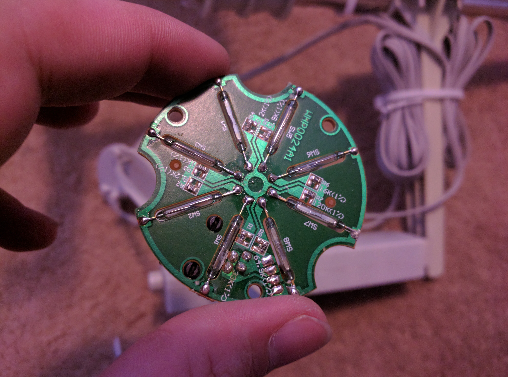
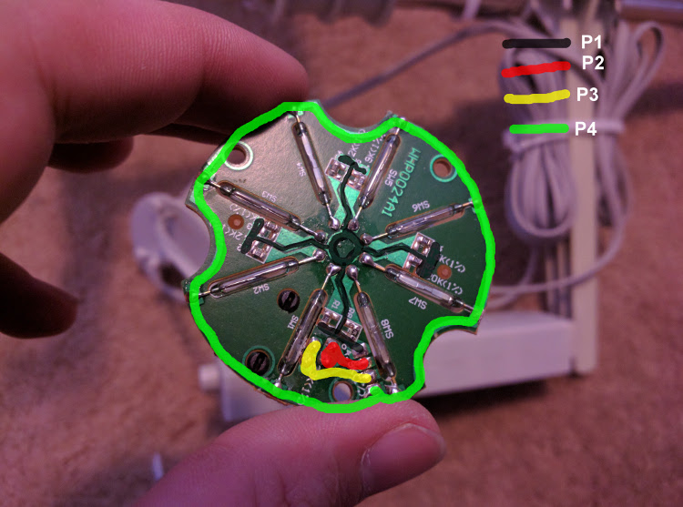

I am starting a weather station project, taking an old broken weather station, and getting it to work with Arduino and a Raspberry Pi web server. After a quick inspection of the ports on the old station transmitter, I found that the weather vain uses a 4 wire plug. This got me worried as the colors also matched the i2c wire colors. After opening the vain, I found no ICs of any kind in the chip.
The board uses two of the four wires, and the other two are relayed from the wind speed device. the vain uses 8 reed switches, each connected from P4 to P1 through a resistor (each switch has a different resistance).
| Switch | Resistance |
|---|---|
| SW1 | 33K |
| SW2 | 8k2 |
| SW3 | 1k |
| SW4 | 2k2 |
| SW5 | 3k9 |
| SW6 | 16k |
| SW7 | 120k |
| SW8 | 64k9 |
The placement of the resistors seem random, and I don't know how I would find which switch is active, as I don't think it is possible to find resistance solely from voltage difference. I'll have to do some more testing.


I found that the anemometer also uses reed switches, one to be exact. It seems to switch states every 180°. It seems like it will be the easiest part to implement, though I will have to figure out a conversion between rpm and windspeed.
I haven't yet opened it up, however I can tell that it uses a reed switch. When water enters the device, it will fall into a trough. When the trough fills, It will tip over emptying the water changing the state of the reed switch. Another trough on the other side is now collecting water continueing the cycle.
I think that each switch is equivelent to 0.01in though I'll have to do some testing to be sure.